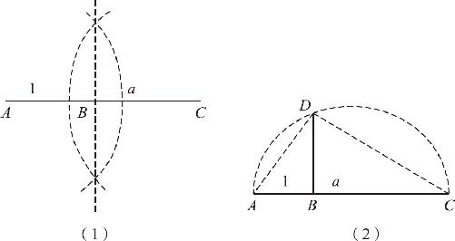
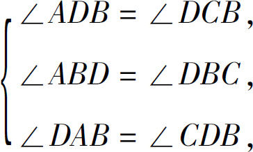
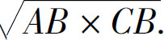
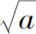

我们已经掌握了通过尺规作图实现加减乘除的方法，那么乘方开方该怎么做呢？乘方的本质是乘法，因此乘方运算可以通过连续相乘来逐步实现；但是开方运算就完全不同了，像三大难题之一的立方倍积问题，就是要对一条线段开立方，而且这是一个已经被证明无解的问题，所以开立方的运算是无法通过尺规作图来实现的．尽管如此，我们却可以对一条线段开平方．接下来我们就一起来分析．
单位长度“1”：_____
线段a ：__________
和乘除法的操作类似，开平方的前提也需要有一个已知线段表示单位长度“1”．但即使如此，还是很难想象如何对一条线段开平方．首先假设，如果有一条线段b ，它的平方等于已知线段a ，也就意味着a ∶b ＝b ∶1，也就是说，已知线段长除以所求线段长等于所求线段长除以单位长度“1”．因此，可以把这四条线段放到一对相似三角形中，通过相似定理来求出未知线段．但如何作出两个相似三角形呢？我们就需要利用直径的圆周角等于直角的定理来实现了．具体方法如下：（如图10－8所示）

图10－8
第一步，在一条直线AC 上截取AB 等于单位长度“1”，BC 等于已知线段a ．
第二步，以AC 为直径作圆，过点B 作直线BD ⊥AC ，且交圆弧于D ，BD 即为所求．
证明过程如下：
∵AC 为直径，
∴∠ADC ＝90°（直径的圆周角为直角）．
∵BD ⊥AC ，
∴∠ABD ＝∠DBC ＝90°．
∵∠DAB ＝∠DBC －∠ADB （外角定理），
又∵∠BDC ＝∠ADC －∠ADB （整体等于部分之和），
∴∠DAB ＝∠BDC （等量代换）．
同理：∠ADB ＝∠DCB ．
在△ADB 和△DCB 中：

∴△ADB ∽△DCB （三个对应角相等），
∴AB ∶DB ＝DB ∶CB （相似三角形对应边成比例），
∴DB ×DB ＝AB ×CB ，DB ＝

．又∵AB ＝1，CB ＝a ，
∴DB ＝

．以上就是通过尺规作图的方式，为已知线段开平方的结果．具体过程总结如下：首先，把已知线段和单位长度的线段拼在一起；然后，过拼接点作垂线；之后，以拼合后总长度为直径画圆，圆和垂线产生一个交点，连结交点和垂足，两者之间的距离就是开方的结果．掌握了尺规作图的加减乘除和乘方开方的操作后，几何学的部分就接近尾声了．回顾前面的内容不难发现：
几何学是没有数字的数学，在尺规作图中隐藏的同样是加减乘除的基本规律．在课程中，我们从几何学的根源——分地问题出发，一起见证了绳子和尺规是如何在没有准数的条件下实现我们所需要的一切的．为什么在不知道线段的长短、不知道图形面积的情况下，却仍然可以做加减乘除乘方开方的运算呢？这个问题的答案恰恰就是几何学应该带给我们的最大启示！
根本原因只有两个：
第一，加减乘除等运算的性质是这个世界运动变化的根本规律，而不是数字独有的性质．在代数中，字母、算式同样是可以加减乘除的，所有这些内容之所以能够加减乘除，仅仅是因为它们是对世间万物的一种抽象方式．
第二，点、线、面是对世界的一种抽象表达方式．人类文明是从数数和画画开始的，如果说数数对应的是算术，那么画画对应的就是几何．在画画的时候，笔落在纸面上，只能产生一个点，点运动起来以后就产生了线，多根线条组合起来就形成了面和体．
正是因为加减乘除是世界万物的基本规律，并且点、线、面是世界万物的一种抽象表达，所以点、线、面才会具有加减乘除的运算能力．世界万物有加减乘除的性质，好比人有自己的五官相貌；点、线、面是世间万物的抽象，好比照片是对人的一种抽象．因为人的五官相貌客观存在，所以我们才能通过照片识别出人的五官；同理，因为世界有加减乘除的规律，所以从点、线、面中就可以找到实现加减乘除的方法．
随着几何知识的深入学习，我们不由得对古人的智慧发出由衷的感叹：感叹古人的认知能力，他们不但能够把一切都抽象成点、线、面，而且能够把一切多边形转换为矩形；感叹古人的动手能力，他们仅仅利用手中的绳子，就可以做到垂直、平行、平分，甚至乘方、开方；更感叹古人的逻辑推理能力，他们居然能够从几条显而易见的公理出发，把如此众多的定理组织成一个无懈可击的逻辑大厦．在这样精美的建筑面前，我们不禁被古人的智慧所折服，被几何学的精美所震撼．